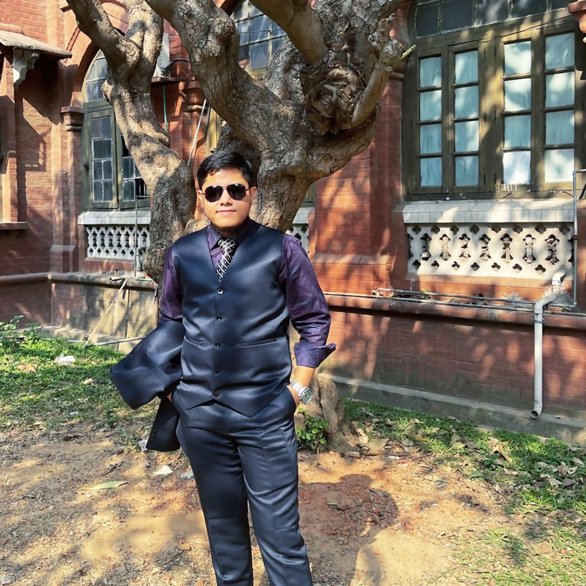

Md Abrar Hasin Parash
B.S. in Soil, Water and Environment
Department of Soil, Water and Environment
University of Dhaka

"Study to broaden the horizon of knowledge in Soil Science."
Welcome. I am Abrar, a life science researcher passionate about understanding the intricate systems that sustain life beneath our feet. My research spans soil science, mycology, and environmental ecology, with the goal of informing evidence-based solutions for a sustainable future.
Based at the University of Dhaka, I work at the intersection of soil ecology and environmental science, collaborating with peers and institutions to translate science into meaningful action.


"Behold — let the world of Abrar be revealed to you as you venture in."
Explore ›››
Have a question, collaboration idea, or just want to say hello? I would love to hear from you. Reach out and I will get back to you as soon as possible.
Reach out ›››